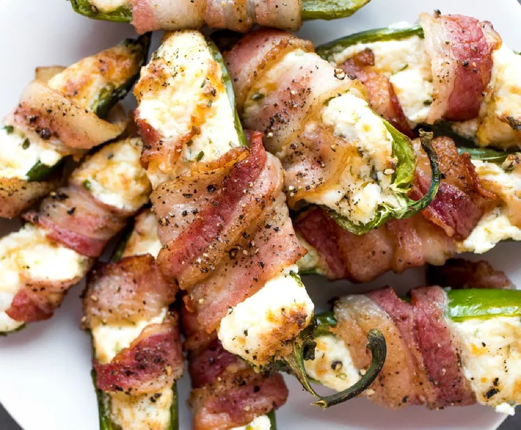

Jalapeno

Description
A very hot green chilli pepper, used especially in Mexican-style cooking.
Ingredients
- 6 medium jalapeno peppers, halved and seeded
- 6 ounces cream cheese, softened
- 1 ounce shredded Cheddar cheese, or to taste
- 3 slices salami
- 6 slices bacon, cut in half lengthwise
Steps
- Preheat an air fryer to 390 degrees F (199 degrees C) according to manufacturer's instructions.
- Fill each jalapeno half with some cream cheese and Cheddar cheese. Place 1/2 a slice of salami on top of each pepper, wrap with a piece of bacon, and secure with a toothpick, if necessary.
- Layer jalapeno poppers inside of the preheated air fryer and cook until bacon is browned and cheese is melted, 10 to 12 minutes.